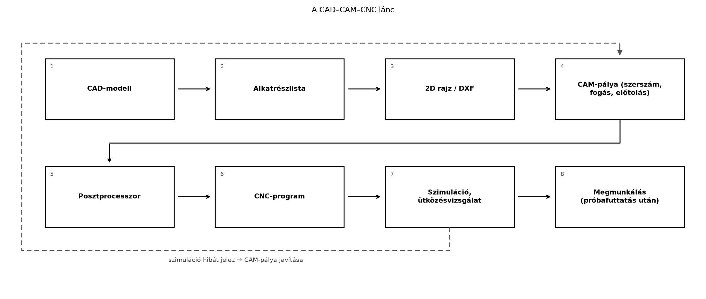

A CNC-megmunkálóközpont a lapszerkezetű bútorgyártás egyik leggyorsabb és legpontosabb gépe. A hagyományos alsómarón vagy fúrógépen minden furatot, hornyot és kontúrt külön, sablonnal, ütközőkkel, gyakran hosszadalmasan állítunk be. A CNC-gép ezt a munkát egyetlen rögzítéssel, számítógépes program alapján, ismételhető pontossággal végzi el. Ha egy vevő korpuszbútort vagy konyhaszekrényt rendel, a furatkiosztásnak milliméterre illeszkednie kell a vasalatokhoz. Itt jön be a CNC: a gép a programban megadott koordinátákra mozog, és a megfelelő szerszámmal dolgozik.
Képzeljünk el egy sík bútorlapot, például egy 720 mm széles, 500 mm magas szekrényoldalt. A lap a CNC-asztalra fekszik. A gép a lap bal alsó sarkától méri a koordinátákat. A vízszintes tengely az X, a mélységi tengely az Y, a függőleges, főorsó-irányú tengely a Z. Amikor a program azt mondja, hogy „menj X = 81 mm, Y = 37 mm pontra, és fúrj 5 mm mélyre (Z = −5 mm)”, a gép oda mozdul, leengedi a fúrót, és készíti a tiplifuratot. Ugyanezt a mozgást több százszor, pontosan ismétli.
Definíció. Az NC (numerikus vezérlés, numerical control) olyan gépvezérlés, amely számokkal megadott mozgáspályát hajt végre, program alapján. A régebbi NC gépek lyukszalagról vagy egyszerű elektronikáról olvasták a programot. A CNC (computer numerical control) már számítógépes vezérlőegységgel dolgozik, amely tárolja, megjeleníti, szimulálja és futtathatóvá teszi a programot. Ma a faiparban gyakorlatilag CNC-gépeket használunk.
Megjegyzés. A „CNC” kifejezést a műhelyben gyakran a teljes gépre is értik: CNC-megmunkálóközpont, CNC-maró. A programot többnyire CAM-rendszerrel készítik, vagy egyszerű esetben kézzel írják, vezérlőtől függő kódokkal.
A CNC-gép munkaterét derékszögű koordináta-rendszerben írjuk le. A faipari megmunkálóközpontoknál a leggyakoribb a jobbsodrású rendszer:
A koordináták mm-ben értendők. A forgástengelyeket (A, B, C) ebben a könyvben nem részletezzük, mert a síklap-megmunkálás általában 3 tengellyel történik.
Definíció. A gépi nullpont a gép referenciapontja, amelyhez a gép a bekapcsolás utáni referenciamenet során viszonyítja a tengelyeket. A munkadarab-nullpont (gyakran W-nullpont) a munkadarabon kijelölt pont, amelyből a program koordinátáit mérjük.
A faiparban a munkadarab-nullpontot gyakran a lap bal alsó sarkába, a felső felületre vagy a vákuumasztal tetejére helyezzük. A program X, Y, Z koordinátái ehhez a nullponthoz képest értendők.
Példa. Egy szekrényoldalon a nullpont a bal alsó sarok. Az első tiplifurat középpontja X=37 mm, Y=37 mm. A gép a nullpontból 37 mm-t jobbra, 37 mm-t hátrafelé mozog, majd lefúr.
A gép kezelőjének a nullpontfelvétel során meg kell mérnie és be kell állítania, hogy a munkadarab-nullpont a gépi koordináta-rendszerben hol helyezkedik el. Ez gépenként eltérő lehet, és a munkadarab befogása után mindig újra ellenőrizendő.
Az ábra szerint az első furat X = 37 mm-re jobbra és Y = 37 mm-re
hátra van a W-nullponttól. A programrészlet Z5 mondata a
lap felső síkja fölé, a Z-5 mondata a lapba viszi a
szerszámot, ezért a +Z irány felfelé, a munkadarabtól el mutat. A
HTML-kiadásban a lenti programrészlet N40–N70 mondatai lépésenként
lejátszhatók.
A faipari CNC-megmunkálóközpont fő részei:
A munkadarab befogása faipari CNC-n:
Gépbiztonság. A CNC-gépet csak betanított, felügyelt tanuló kezelheti; védőberendezés nélkül, egyedül, fáradtan ne végezd. A védőburkolatot, vészleállítót, fénykaput vagy nyomásérzékeny szőnyeget (ha van) soha ne iktasd ki. A gép automatikus szerszámcseréjét, mozgását mindig a védőtérből, lecsukott ajtó mellett figyeld. A forgó szerszámhoz ne nyúlj, amíg a főorsó teljesen meg nem állt.
A CNC-program mondatokból (blokkokból) áll. Egy mondat egy mozgást vagy kapcsolási utasítást ír le. A mondat elején gyakran N sorszám áll, majd a G (előkészítő) és M (kiegészítő) kódok, koordináták, előtolás, fordulatszám és szerszámadatok.
A G- és M-kódok vezérlőfüggők, azaz a konkrét gépkönyvben ellenőrizni kell őket. A faiparban gyakori alapparancsok (tájékoztató, nem szabvány):
A faipari vezérlők gyakran saját egyszerűbb nyelvet is használnak (pl. párbeszédes felület, furatminták), ezért a kódokat mindig az adott géphez kell igazítani.
Szerszámkorrekció. A program a szerszámhossz-korrekcióval veszi figyelembe, hogy a főorsóba fogott szerszám milyen hosszú. A szerszámátmérő-korrekciót a maró kontúr melletti pályájánál használjuk. A korrekciós értéket a szerszámtáblázatban adjuk meg. A CAM-program ezt automatikusan kezeli, de a kezelőnek ellenőriznie kell, hogy a szerszámtáblázat a ténylegesen befogott szerszámhoz tartozik.
Példa programrészlet (text, vezérlőfüggő):
N10 G90 (abszolút méret)
N20 T1 M6 (1. szerszám befogása)
N30 S18000 M3 (18 000 min^-1, forgás)
N40 G0 X37 Y37 (gyorsjárat a furat fölé)
N50 G0 Z5 (5 mm-rel a felület fölé)
N60 G1 Z-5 F1200 (fúrás 5 mm-re, előtolás)
N70 G0 Z10 (felemelés)
N80 M5 (főorsó leállítás)
N90 M30 (program vége)Ez a részlet csak szemléltető példa, nem valós gépkód; a tényleges utasítások a célgép programozási kézikönyvéből valók.
A faipari CNC-program leggyakrabban CAD/CAM-láncból készül, ahogyan a CAD, látványtervezés, optimalizálás és CNC-adatátvitel alfejezetben láttuk.
A folyamat:
A gyakori adatátviteli formátum a DXF a kontúrokhoz, de a fúrási és marási program már a gép saját formátuma. A CAM-rendszer posztprocesszora biztosítja a helyes kimenetet.
A CAD–CAM–CNC lánc lépéseit az alábbi folyamatábra foglalja össze:

A CNC megmunkálás előtt a furatokat, hornyokat a munkadarabon pontosan meg kell határozni. Jellemző a 32-es rendszer: a bútorlapokon a vasalatok, tiplik, fiókvezetők furatai gyakran 32 mm-es raszterben helyezkednek el. A CNC könnyen kezeli ezt, mert a programban a koordinátákat 32-es vagy 16-os osztással adjuk meg.
Számítási példa 1: Kerületi (forgácsolási) sebesség
Adott egy 12 mm átmérőjű CNC-maró, a főorsó fordulatszáma 18 000 min⁻¹. Mennyi a forgácsolási sebesség?
Összefüggés. , ahol mm, 1/min, m/s.
Behelyettesítve:
Ellenőrzés: 12 mm-es maró 18 000 min⁻¹ fordulattal 11–12 m/s körüli sebességet ad, ez a faipari marásban elfogadható, de a gyártó adatlapját ellenőrizni kell.
Számítási példa 2: Előtoló sebesség
Ugyanaz a maró, két élű (z = 2). A gyártói ajánlás szerint fogankénti előtolás mm. Mekkora lesz az előtoló sebesség m/min-ben?
Összefüggés. mm/min, majd átváltás m/min-re.
Behelyettesítve:
Ellenőrzés: kisméretű, gyorsan forgó marónál 10 m/min körüli előtolás jellemző, de gépkönyv és adatlap szerint változhat.
Számítási példa 3: Szerelvényhelyek koordinátái a 32-es rendszerben
Egy szekrényoldal magassága 720 mm. A furatsor az élétől 37 mm-re húzódik. A furatok 32 mm-es raszterben kezdődnek; a függőleges raszter , ahol az kezdőeltolást a vasalat- vagy rendszergyártó adja (ellenőrizendő); ebben a példában mm. A polctartó csapok furatait fúrjuk. Adjuk meg az első három furat Y-koordinátáját, ha az X fix 37 mm.
A nullpont a lap alsó széle. A furatok függőleges középpontjai:
Általánosan: mm, ahol a furat sorszáma.
Ellenőrzés: 37, 69, 101 mm mind 32 mm távolságra vannak, a legalsó 37 mm-re az élétől. A program ezeket a koordinátákat használja.
Megmunkálandó: 720 × 500 × 18 mm-es MDF lap, polctartó furatsor 32-es rendszerben, valamint a szekrényoldal szerelőtalp-furatai (vasalatgyártói rajz szerint); a csészés pánt fészke az ajtólapba kerül, 35 mm-es, 12 mm mély (tájékoztató, ellenőrizendő).
Anyag: MDF lap, a furatokhoz 5 mm-es csigafúró, a pántfészekhez Ø 35 mm-es pántfúró (Forstner-fúró).
Gépek és eszközök: CNC-megmunkálóközpont vákuumos asztallal, elszívóberendezés, védőburkolat, vészleállító, derékszögelő, tolómérő.
Gépbiztonság. A művelet betanított, felügyelt tanulónak szól; védőberendezés nélkül, egyedül, fáradtan ne végezd. Viselj védőszemüveget, hallásvédőt és ha szükséges, FFP porálarcot. Ne nyúlj a munkatérbe, amíg a főorsó forog, és soha ne kapcsold ki a védőburkolat-reteszt.
Indítás előtti ellenőrzés:
Lépések:
Dokumentálás: munka- vagy gépnaplóban rögzítsd a program nevét, a munkadarab darabszámát, a beállított nullpontot, a szerszámokat, és az észlelt rendellenességeket.
Egy műhelyben korpuszbútor-oldalakat fúrtak CNC-n. A megrendelő reklamált, mert a fiókvezető furatai nem illeszkedtek a vasalathoz. A vizsgálat kiderítette, hogy a kezelő a programban a raszter kezdőpontját egy osztással feljebb adta meg, ezért minden furat 32 mm-rel eltolódott (a rossz élhez vett nullpont ennél nagyobb, a lapméret és az éltávolságok különbségével tükrözött/eltolt furatképet adna). A hibát a próbafuttatásnál nem ellenőrizték. A tanulság: a nullpont és az első furat ellenőrzése kötelező, mielőtt a teljes sorozat legyártásra kerül. A selejtet újra kellett gyártani, ami anyag- és időveszteséggel járt.
1. feladat (A) Határozd meg egy 16 mm átmérőjű CNC-maróval, 16 000 min⁻¹ fordulatszámon elérhető forgácsolási sebességet m/s-ban!
2. feladat (A) Egy kétélű marónál fogankénti előtolás 0,25 mm, fordulatszám 15 000 min⁻¹. Mennyi az előtoló sebesség m/min-ben?
3. feladat (B) Egy 800 mm magas szekrényoldalon a furatsor a lap alsó szélétől 37 mm-re kezdődik, 32 mm-es raszterben. Add meg az első öt furat Y-koordinátáját! Mekkora a legfelső furat távolsága az alsó éltől?
4. feladat (B) Magyarázd el, mi a különbség a gépi nullpont és a munkadarab-nullpont között, és miért kell mindkettőt ismerni a CNC-gépen!
5. feladat (C) Egy CNC-programban az egyik furat után a gép váratlanul gyorsjáratban a lap széléhez megy. Milyen hibalehetőségeket keresnél a programban, a szerszámbeállításban vagy a munkadarab befogásában?
6. feladat (D) Készíts rövid ellenőrzőlistát a CNC-gép indításához, amelyet a műhelyben ki lehet függeszteni! Tartalmazzon legalább hat pontot.
Önellenőrzés – válaszok:
Feladatok megoldása:
1. feladat. Képlet: . Behelyettesítve: . Ellenőrzés: 16 mm maró 16 000 min⁻¹ fordulattal 13–14 m/s, ami faipari maráshoz jellemző (tájékoztató).
2. feladat. .
3. feladat. Az -koordináták: 37 mm; 69 mm; 101 mm; 133 mm; 165 mm. A legfelső, ötödik furat távolsága az alsó éltől 165 mm. (Általában: mm.)
4. feladat. A gépi nullpont a gép referenciapontja, amelyhez a tengelyek a bekapcsolás utáni referenciamenet során viszonyulnak. A munkadarab-nullpont a munkadarabon van, a program ennek a koordinátáit használja. Ismernünk kell mindkettőt, mert a vezérlő a belső gépi koordinátákból számítja ki a munkadarab-nullponthoz viszonyított pozíciókat; ha bármelyik hibás, a megmunkálás eltolódik.
5. feladat. Lehetséges okok: (a) a programban rossz koordináta szerepel (pl. elmaradt G90, ezért G91-es relatív mozgásként értelmezi); (b) a munkadarab-nullpont nem a tényleges sarkon van; (c) a munkadarab elmozdult, ezért a sarkhoz képest a pálya a levegőbe vagy a lap szélére fut; (d) a szerszámkorrekció hibás, és a gép a pótlólagos mozgással kompenzál. A helyes sorrend: program szimulálása, nullpont ellenőrzése, befogás ellenőrzése, próbafuttatás csökkentett sebességgel.
6. feladat. Ellenőrzőlista (példa):
A CNC-megmunkálóközpont a faipari lapszerkezet-gyártás kulcsgépe. A gép három tengellyel (X, Y, Z) dolgozik, és a munkadarabon kijelölt munkadarab-nullponttól mért mm-koordinátákra mozog. A gépi nullpont a gép referenciapontja, a szerszámkorrekció a befogott szerszám hosszát és átmérőjét juttatja érvényre. A CNC-program mondatokból áll, vezérlőfüggő G- és M-kódokkal, amelyek a mozgást, előtolást, fordulatszámot és szerszámcserét írják le. A programot CAM-rendszer készíti, posztprocesszor alakítja a célgép nyelvére, majd a gép szimulációval és próbafuttatással ellenőrzi. A biztonsági szabályok központi eleme a védőtér, a vészleállító, a vákuumos vagy mechanikus befogás, valamint a szerszám megállása előtti tiltott beavatkozás. Továbbvitt eredmény: a CNC-program elve, a nullpont, a szerszámkorrekció és a furatkiosztás arra való, hogy a Lapszerkezetű termékek teljes gyártási folyamata alfejezetben a korpuszbútorok és lapszerkezetű alkatrészek megmunkálását lépésről lépésre megtervezzük.
Ez az alfejezet az általános faipari CNC-technológiai alapelvekre, a hazai felnőttképzési gyakorlatra és a gépkönyvek felépítésére támaszkodik. Ellenőrizendő: a faipari CNC-gépek biztonságára vonatkozó MSZ EN ISO 19085 sorozat hatályos, CNC-re alkalmazandó része; a munkavédelemre és egyéni védőeszközökre vonatkozó jogszabályok; a használt fordulatszám-, előtolás-, fogankénti előtolás és szerszám adatok mindig a szerszámgyártó és a gépkönyv szerint; a G- és M-kódok konkrét jelentése a célgép vezérlőkönyvéből; a 32-es rendszerű furatkiosztás és a polctartó vasalatok tényleges méretei. A példaként megadott programrészlet és a számítási értékek tanulási példák, nem kivitelezési előírások.